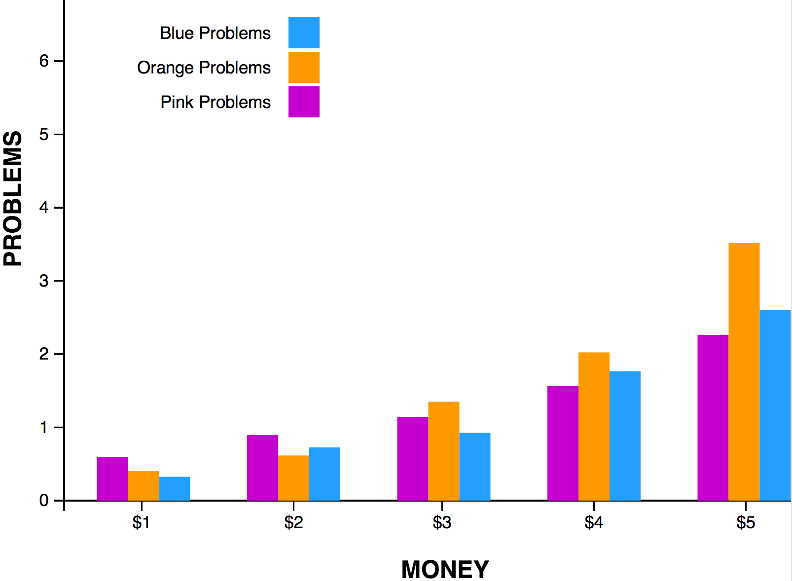

G.
T.
L.
GYM.
TAN.
LAUNDRY.
Creating reusable charts & graphics
with d3.js
Github
/brittanystoroz/presentations
Twitter
@brittanystoroz

The Challenges
unlimited real estate
d3's robust & flexible nature
wide range of chart displays
How is it done?
object composition
simple datasets
templated layers
Links & Such
d3.js
Tuts straight from Bostock
nvd3